The main objective of this blog is to explain numerically the difference between exponential and polynomial decay in term of energy and spectral properties. We Show also that system with polynomial decay are very sensitive to the choice of initial data.
Contents
Model Problem
We consider the numerical approximation of the following coupled thermoelastic wave models
$$ \begin{equation} \label{eq1} \tag{1} \left\{\begin{array}{llll} u_{tt}(x,t)- \Delta u(x,t)+\gamma\theta_x(x,t)=0\quad &in\;\Omega\times(0, \infty)\\ \theta_{t}(x,t)-\Delta\theta(x,t)-\gamma u_{tx}(x,t) =0\quad &in\;\Omega\times(0, \infty)\\ u(x,t)=0=\theta(x,t)\qquad &\text{on } \partial\Omega\times(0,\infty)\\ u(x,0)=u_{0}(x),\; u_{t}(x,0)=u_{1}(x),\; \theta(x,0)=\theta_{0}(x) \quad &on \;\Omega \end{array} \right. \end{equation} $$
Error updating Text.
String scalar or character vector must have valid interpreter syntax:
$$ \begin{equation} \label{eq1} \tag{1} \left\{\begin{array}{llll} u_{tt}(x,t)- \Delta u(x,t)+\gamma\theta_x(x,t)=0\quad &in\;\Omega\times(0, \infty)\\ \theta_{t}(x,t)-\Delta\theta(x,t)-\gamma u_{tx}(x,t) =0\quad &in\;\Omega\times(0, \infty)\\ u(x,t)=0=\theta(x,t)\qquad &\text{on } \partial\Omega\times(0,\infty)\\ u(x,0)=u_{0}(x),\; u_{t}(x,0)=u_{1}(x),\; \theta(x,0)=\theta_{0}(x) \quad &on \;\Omega \end{array} \right. \end{equation} $$
$$ \begin{equation} \label{eq2} \tag{2} \left\{\begin{array}{llll} u_{tt}(x,t)- \Delta u(x,t)+\gamma\theta(x,t)=0\quad &in\;\Omega\times(0, \infty)\\ \theta_{t}(x,t)-\Delta\theta(x,t)-\gamma u_{t}(x,t) =0\quad &in\;\Omega\times(0, \infty)\\ u(x,t)=0=\theta(x,t)\qquad &\text{on } \partial\Omega\times(0,\infty)\\ u(x,0)=u_{0}(x),\; u_{t}(x,0)=u_{1}(x),\; \theta(x,0)=\theta_{0}(x) \quad &on \;\Omega \end{array} \right. \end{equation} $$
Error updating Text.
String scalar or character vector must have valid interpreter syntax:
$$ \begin{equation} \label{eq2} \tag{2} \left\{\begin{array}{llll} u_{tt}(x,t)- \Delta u(x,t)+\gamma\theta(x,t)=0\quad &in\;\Omega\times(0, \infty)\\ \theta_{t}(x,t)-\Delta\theta(x,t)-\gamma u_{t}(x,t) =0\quad &in\;\Omega\times(0, \infty)\\ u(x,t)=0=\theta(x,t)\qquad &\text{on } \partial\Omega\times(0,\infty)\\ u(x,0)=u_{0}(x),\; u_{t}(x,0)=u_{1}(x),\; \theta(x,0)=\theta_{0}(x) \quad &on \;\Omega \end{array} \right. \end{equation} $$
where 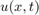 is the displacement (longitudinal or transverse, depending upon the application) at position 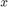 along a bounded smooth domain $\Omega\subset\mathbb{R}$ and time 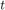 , and 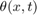 is the temperature deviation from the reference temperature at position and time , 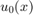,  and 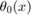 are initial data in a suitable space. The small positive constant 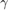 is a thermo-mechanical coupling parameter and is generally small in comparison to 1. System (\ref{eq1}) differs from system $\eqref{eq2}$ at the coupling terms, where we have replaced the strong coupling (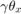 and 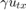) by a weak coupling (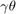 and 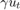).
and 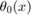 are initial data in a suitable space. The small positive constant 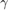 is a thermo-mechanical coupling parameter and is generally small in comparison to 1. System (\ref{eq1}) differs from system $\eqref{eq2}$ at the coupling terms, where we have replaced the strong coupling (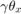 and 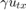) by a weak coupling (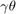 and 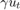).
Error updating Text.
String scalar or character vector must have valid interpreter syntax:
$\eqref{eq2}$
Error updating Text.
String scalar or character vector must have valid interpreter syntax:
$\Omega\subset\mathbb{R}$
It is well known from literature that system (\ref{eq1}) and (\ref{eq2}) are respectively exponentially and polynomially stable, see [3,7] and [5,6,9].
In this post, we will show by numerical experiments, how the coupling terms affect quantitative and qualitative properties of thermoelastic systems (\ref{eq1}) and (\ref{eq2}). These results could be found in [8,10].
To do this, we consider a semi discretization version of both systems (\ref{eq1}) and (\ref{eq2}), obtained with finite element method, which has the following form
$$ \begin{equation} \label{eq3} \tag{3} (S_i)\left\{\begin{array}{ll} z'_n(t)=A_{i,n} z_n(t),\quad t\geq 0,\;n\in\mathbb{N},\;i=1,2\\ z_n(0)=z_{n0},\;n\in\mathbb{N}\\ \end{array} \right. \end{equation} $$
Error updating Text.
String scalar or character vector must have valid interpreter syntax:
$$ \begin{equation} \label{eq3} \tag{3} (S_i)\left\{\begin{array}{ll} z'_n(t)=A_{i,n} z_n(t),\quad t\geq 0,\;n\in\mathbb{N},\;i=1,2\\ z_n(0)=z_{n0},\;n\in\mathbb{N}\\ \end{array} \right. \end{equation} $$
where for all $n\in\mathbb{N}$, 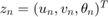 is the semi discrete solution, 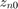 is the discretized initial data,  the discretized dynamic and the subscript 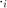 refers to system (\ref{eq1}) and (\ref{eq2}) with
the discretized dynamic and the subscript 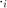 refers to system (\ref{eq1}) and (\ref{eq2}) with
Error updating Text.
String scalar or character vector must have valid interpreter syntax:
$n\in\mathbb{N}$
$$ \begin{align} A_{i,n}=\left(\begin{matrix} 0 & D_n & 0\\ -D_n & 0 & -\gamma F_{i,n}\\ 0 & \gamma F_{i,n} & -D_n^2 \end{matrix} \right),\quad i=1,2 \end{align} $$
Error updating Text.
String scalar or character vector must have valid interpreter syntax:
$$ \begin{align} A_{i,n}=\left(\begin{matrix} 0 & D_n & 0\\ -D_n & 0 & -\gamma F_{i,n}\\ 0 & \gamma F_{i,n} & -D_n^2 \end{matrix} \right),\quad i=1,2 \end{align} $$
and 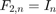,
$$ \begin{align} D_n=\left(\begin{matrix} 1 & & \\ & \ddots & \\ & & n \end{matrix} \right),\quad (F_{1,n})_{ij}=\left\{\begin{array}{ll} -\frac{4}{\pi}\frac{ij}{i^2-j^2},\quad |i-j|=\text{odd},\\ 0,\qquad\qquad\text{otherwise}. \end{array} \right. \end{align} $$
Error updating Text.
String scalar or character vector must have valid interpreter syntax:
$$ \begin{align} D_n=\left(\begin{matrix} 1 & & \\ & \ddots & \\ & & n \end{matrix} \right),\quad (F_{1,n})_{ij}=\left\{\begin{array}{ll} -\frac{4}{\pi}\frac{ij}{i^2-j^2},\quad |i-j|=\text{odd},\\ 0,\qquad\qquad\text{otherwise}. \end{array} \right. \end{align} $$
Spectral properties of thermoelastic systems
Figure 1 and Figure 2 show how the coupling terms affect the placement of eigenvalues of the dynamic 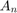. In Figure 1, we see that a uniform distance between the eigenvalues and the imaginary axis is preserved, see Table 1. Another observation is that for fixed 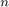, the eigenvalues of higher frequency modes, in particular, the one of the 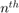 mode, are closer to the imaginary axis. Moreover, as the number of modes increases, these eigenvalues bend back towards the vertical line 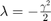, a fact which has been already shown in [4]. Therefore, the corresponding spectral element approximation scheme preserves the property of exponential stability.

 Location of the complex eigenvalues of the matrix  with the finite element method
with the finite element method
Nx = 30; stabexpsem(Nx);
pour n=30, d=8.940629e-04 pour n=60, d=8.941023e-04 pour n=90, d=8.941065e-04 pour n=120, d=8.941075e-04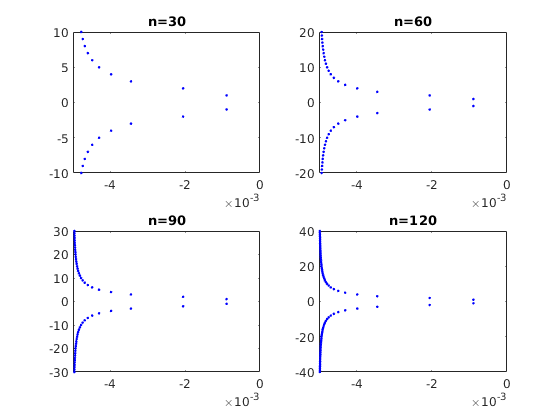
In Figure 2, conversely to Figure 1 where a uniform distance between the eigenvalues and the imaginary axis is preserved, we observe that, as the number of modes increases, an asymptotic behaviour appears in the neighborhood of the imaginary axis at 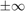. This property is mainly related to systems with polynomial decay, see \cite{BEPS2006}.
 Location of the complex eigenvalues of the matrix 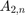 with the finite
Nx = 30; stabpolysem(Nx);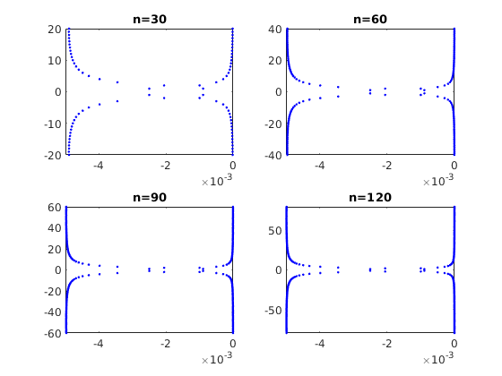
Uniform and polynomial decay of the energy
The discrete energy associated to system (\ref{eq3}) is given by
$$ \begin{equation} \label{eq4} \tag{4} E_{i,n}(t)=\frac{1}{2}\sum_{j=1}^n\Big\{ | u_j(t)|^{2} + | v_j(t)|^{2}+ | \theta_j(t)|^{2}\Big\},\;i=1,2. \end{equation} $$
Error updating Text.
String scalar or character vector must have valid interpreter syntax:
$$ \begin{equation} \label{eq4} \tag{4} E_{i,n}(t)=\frac{1}{2}\sum_{j=1}^n\Big\{ | u_j(t)|^{2} + | v_j(t)|^{2}+ | \theta_j(t)|^{2}\Big\},\;i=1,2. \end{equation} $$
The discrete energy 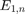 associated to system (ref{eq1}) decays exponentially to zero, see Figure 3, in the following sense: 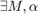 positive constants such that
$$ E_{1,n}(t)\leqslant Me^{-\alpha t}E_{1,n}(0),\;n\in\mathbb{N},\;t>0. $$
Error updating Text.
String scalar or character vector must have valid interpreter syntax:
$$ E_{1,n}(t)\leqslant Me^{-\alpha t}E_{1,n}(0),\;n\in\mathbb{N},\;t>0. $$
However, the introduction of the weak coupling term in system (ref{eq1}) has changed the dynamic and consequently the behavior of energy (\ref{eq4}). In this case, we say that system (\ref{eq2}) decays polynomially to zero, see Figure 4, in the following sense: positive constants such that
$$ E_{2,n}(t)\leqslant \frac{M}{t} \vert A_{2,n} z_{n0} |^2 ; n \in \mathbb{N},\;t>0. $$
Error updating Text.
String scalar or character vector must have valid interpreter syntax:
$$ E_{2,n}(t)\leqslant \frac{M}{t} \vert A_{2,n} z_{n0} |^2 ; n \in \mathbb{N},\;t>0. $$
 Exponential decay of 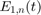
 Polynomial decay of 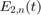
Effect of smoothness of the initial data on the rate of decay of energy
It has been shown theoretically, see [1,2], that the energy associated to system (\ref{eq2}) is very sensitive to the smoothness of its initial data. This fact, has been also observed numerically, see Figure 6. we use
Nx = 100; FinalTime = 100; dt = 0.5; mode = 1; Gamma = 0.2; n = 100; k= 2;
and we consider the following initial data
u0=zeros(1,n); x = linspace(0,pi,100); v0=sqrt(2/pi)*sin(k*x); teta0=zeros(1,n);
Through Figure 6, we notice that for 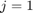, the approximate energy decays to zero as the time increases. Moreover, we observe that the decay rate depends strongly on 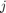. That is, when increases, initial data are very oscillating. We say in this case that the rate of decay of the discrete energy is very sensitive to the choice of the initial data. However, the behavior of the energy assosiated to system (\ref{eq1}) remains indifferent to the smoothness of initial data when 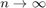, see Figure 5.
 Exponential decay of
 Polynomial decay of
To obtain the previous figures, one need only to execute the following
script:
[u,v,theta,Et] = data_effect_exp(FinalTime,dt,Nx,mode,Gamma);
% AniThermalDisplacement(u,v,theta,Et)
[u,v,theta,Et] = p1energyfem(FinalTime,dt,Nx,mode,Gamma);
% AniThermalDisplacement(u,v,theta,Et)
References
[1] A. B\' atkai, K.J. Engel, J. Pr\"uss and R. Schnaubelt, Polynomial stability of operator semigroups, Math. Nachr. 279, pp.
[2] A. Borichev and Y. Tomilov, Optimal polynomial decay of functions and operator semigroups, Math. Ann., 347(2), pp.455-478, 2010.
[3] S. W. Hansen, Exponential energy decay in a linear thermoelastic rod. J. Math. Anal. Appli.,167, pp. 429-442, 1992.
[4] F.A. Khodja, A. Benabdallah, and D. Teniou, Stability of coupled systems, Abstr. Appl. Anal. Volume 1, Number 3, 327-340, 1996.
[5] F. A. Khodja, A. Benabdallah and D. Teniou, Dynamical stabilizers and coupled systems}, ESAIM Proceeding,2, pp. 253-262, 1997.
[6] F. A. Khodja, A. Bader and A. Benabdallah, Dynamic stabilization of systems via decoupling techniques, ESAIM: COCV,4,
[7] Z. Liu and S. Zheng, Exponential stability of semigroup associated with thermoelastic system, Quart. Appl. Math, 51, pp.535-545, 1993.
[8] Z. Y. Liu and S. Zheng, Uniform exponential stability and approximation in control of a thermoelastic system, SIAM J. Control Optim. 32, pp. 1226-1246, 1994.
[9] Z. Liu and B. Rao, Characterization of polynomial decay rate for the solution of linear evolution equation. Zeitschrift angewandte Mathematik und Physik ZAMP,56, pp. 630-644, 2005.
[10] L. Maniar and S. Nafiri, Approximation and uniform polynomial stability of C_0-semigroups,ESAIM: COCV 22, pp. 208-235, 2016.